指针
7.6.1 变量内存与地址
前面我们讲过存储数据的方式，可以通过变量，或者复合类型中的数组，切片，Map,结构体。
我们不管使用变量存储数据，还是使用符合类型存储数据，都有两层的含义：
存储的数据（内存），对应的地址。
接下来，通过变量来说明以上两个含义。例如，定义如下变量：
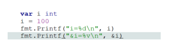
第一个Printf( )函数的输出，大家都很熟悉，输出变量i的值，这个实际上就是输出内存中存储的数据。在前面的课程中，已经讲解过，定义一个变量，就是在内存中开辟一个空间，用来存储数据，当给变量i赋值为100，其实就是将100存储在改空间内。
第二个Printf( )函数的输出，输出的是变量i在内存中的地址。通过如下图来给大家解释：
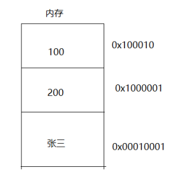
这张图，大家也应该非常熟悉，是在讲解变量时，画的一张图，0x100010假设是变量i的内存地址（通过第二个输出可以获取实际的地址），内存地址的作用：在输出变量中存储的数据时，是通过地址来找到该变量内存空间的。
这个内存地址和实际生活中的地址也很相似，例如：大家可以将内存空间想象成，我们上课的教室，教室中存放有学生，那么现在要找一个学生，必须要知道具体的地址以及教室门牌号。
以上程序输出的结果是：
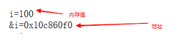
7.6.2 指针变量
现在已经知道怎样获取变量在内存中的地址，但是如果想将获取的地址进行保存，应该怎样做呢？
可以通过指针变量来存储，所谓的指针变量：就是用来存储任何一个值的内存地址。
指针变量的定义如下：
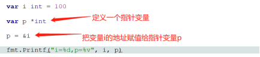
指针变量p的定义是通过 *这个符号来定义，指针变量p的类型为*int,表示存储的是一个整型变量的地址。
如果指针变量p存储的是一个字符串类型变量的地址，那么指针变量p的类型为*string
p=&i :该行代码的意思是，将变量i的地址取出来，并且赋值给指针变量p.也就是指针变量p指向了变量i的存储单元。
可以通过如下图来表示：
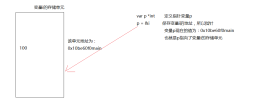
在以上图中，一定要注意：指针变量p存储的是变量i的地址。
大家可以思考一个问题：
既然指针变量p指向了变量i的存储单元，那么是否可以通过指针变量p，来操作变量i中存储的数据？
答案是可以的，具体操作方式如下：
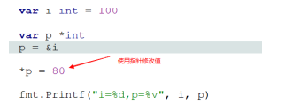
注意：在使用指针变量p来修改变量i的值的时候，前面一定要加上*.（通过指针访问目标对象）
现在打印变量i的值已经有100变为80.
当然，也可以通过指针变量p来输出，变量i中的值，输出的方式如下所示：
所以，*p的作用就是根据存储的变量的地址，来操作变量的存储单元（包括输出变量存储单元中的值，和对值进行修改）
7.6.3 注意事项
在使用指针变量时，要注意以下两点。
1：默认值为nil
var p *int
fmt.Println(p)
直接执行上面的程序，结果是：nil
2:不要操作没有合法指向的内存。
例如，在上面的案例中，我们定义了指针变量p，但是没有让指针变量指向任何一个变量，那么直接运行如下程序，会出现异常。
var p *int
*p = 99 //没有指向 直接操作
fmt.Println(p)
出现的错误信息如下：
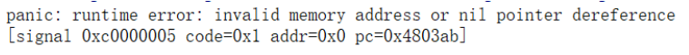
所以，在使用指针变量时，一定要让指针变量有正确的指向。以下的操作是合法的：
var a int
var p *int
p = &a //指向变量a
*p = 99
fmt.Println(p)
在该案例中，定义了一个变量a,同时定义了一个指针变量p,将变量a的地址赋值给指针变量p,也就是指针变量p指向了变量a的存储单元。给指针变量p赋值，影响到了变量a.最终输出变量a中的值也是56.
7.6.4 new( )函数
指针变量，除了以上介绍的指向以外(p=&a)，还可以通过new( )函数来指向。
具体的应用方式如下:
var p *int
p = new(int)
*p = 59
fmt.Println(*p)
new(int)作用就是创建一个整型大小(4字节)的空间
然后让指针变量p指向了该空间，所以通过指针变量p进行赋值后，该空间中的值就是57.
new( )函数的作用就是C语言中的动态分配空间。但是在这里与C语言不同的地方，就是最后不需要关系该空间的释放。GO语言会自动释放。这也是比C语言使用方便的地方。
也可以使用自动推导类型的方式：
q := new(int)
*q = 77
fmt.Println(*q)
7.6.5 指针做函数参数
指针也可以作为函数参数，那么指针作为函数参数在进行传递的时候，是值传递还是引用传递呢？
大家都知道，普通变量作为函数参数进行传递是值传递，如下案例所示：
定义一个函数，实现两个变量值的交换。
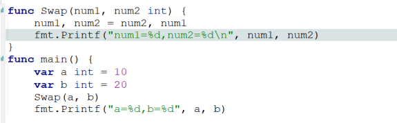
通过以上案例，证实普通类型变量在传递时，为值传递。
那么使用指针作为函数参数呢？现在将以上案例修改成，用指针作为参数，如下所示：
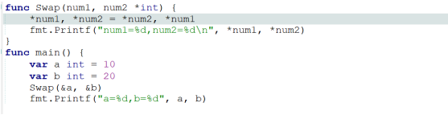
通过以上案例证实，指针作为参数进行传递时，为引用传递，也就是传递的地址。
在调用Swap( )函数时，将变量a与变量b的地址传分别传递给指针变量num1,num2,这时num1和num2,分别指向了变量a,与变量b的内存存储单元，那么操作num1,num2实际上操作的就是变量a与变量b，所以变量a与变量b的值被交换。
数组指针
前面在讲解数组的时候，我们用数组作为函数参数，但是数组作为参数进行传递是值传递，如果想引用传递，可以使用数组指针。具体使用方式如下：
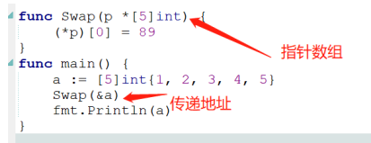
定义一个数组，作为函数Swap的实参进行传递，但是这里传递的是数组的地址，所以Swap的形参是数组指针。，
这时指针p，指向了数组a,对指针p的操作实际上是对数组a的操作，所以如果直接执行如下语句：fmt.Println(*p),会输出数组a中的值。也可以通过*p结合下标将对应的值取出来进行修改。最终在main函数中输出数组a，发现其元素也已经修改。
当然，我们也可以通过循环的方式来将数组指针中的数据打印出来：
7.6.6 指针数组
上一小节，讲解到的是数组指针，也就是让一个指针指向数组，然后可以通过该指针来操作数组。还有一个概念叫指针数组，这两个概念很容混淆，指针数组指的是一个数组中存储的都是指针（也就是地址）。也就是一个存储了地址的数组。
下面通过一个案例，看一下指针数组的应用
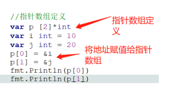
指针数组的定义方式，与数组指针定义方式是不一样的，注意指针数组是将“*”放在了下标的后面。
由于指针数组存储的都是地址，所以将变量i,与变量j的地址赋值给了指针数组p。
最后输出指针数组p中存储的地址。
思考:既然指针数组p存储了变量i和变量j的的地址，那么怎样通过指针数组p操作变量i与变量j的值呢？
具体实现如下：
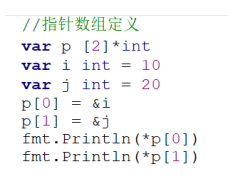
注意这里输出要注意的问题是，没有加小括号。（注意运算顺序）
当然，我们也可以通过for循环的方式来输出指针数组中对应的值。
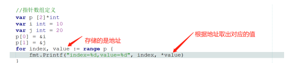
7.6.7 结构体指针变量
我们前面定义了指针指向了数组，解决了数组引用传递的问题。那么指针是否可以指向结构体，也能够解决结构体引用传递的问题呢？完全可以。
下面我们先来看一下，结构体指针变量的定义：
也可以使用自动推导类型
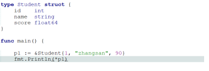
现在定义了一个结构体指针变量，那么可以通过该指针变量来操作结构体中的成员项。
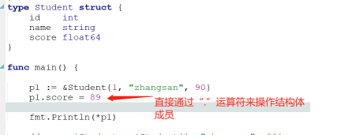
前面在讲解结构时，用结构体作为函数的参数，默认的是值传递，那么通过结构体指针，可以实现结构体的引用传递。具体实现的方式如下：
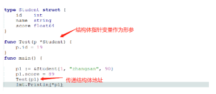